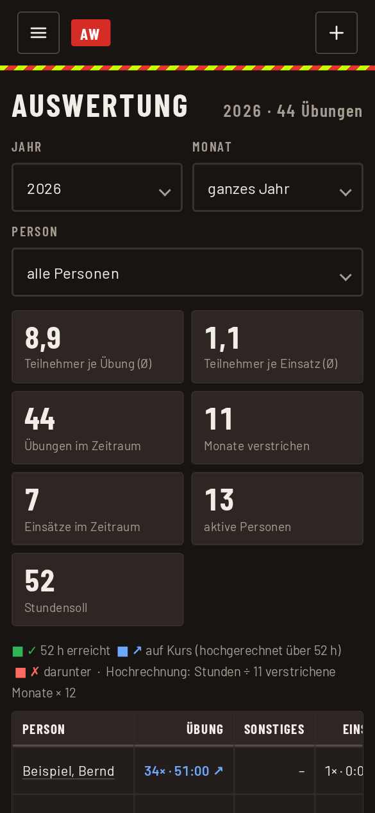
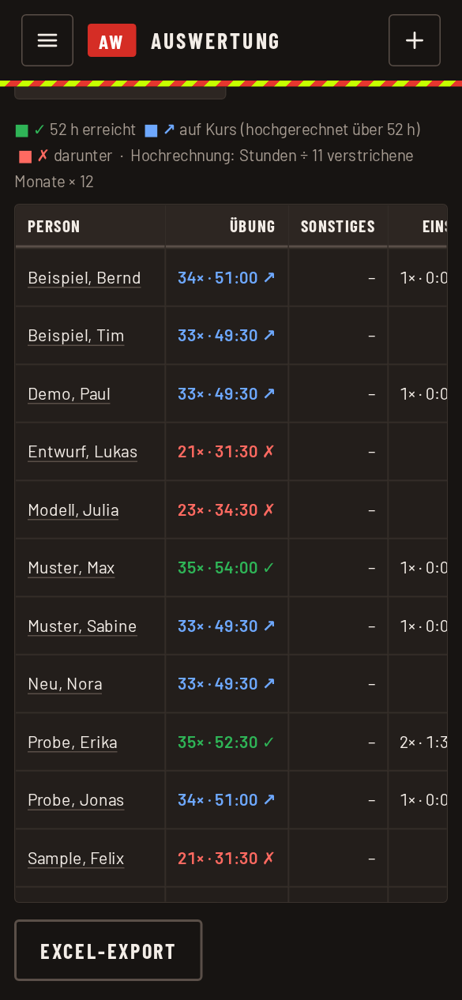

Auswertung
Die Auswertung zeigt, wer wie oft und wie lange teilgenommen hat. Sie ist für Admin und Abteilungsadmin im Menü unter „Auswertung“ zu finden. Abteilungsadmins sehen nur die eigenen Abteilungen.
Zeitraum und Auswahl
Oben wählt ihr Abteilung, Jahr, Monat und optional eine Person. Ohne Monat gilt das ganze Jahr.

Kennzahlen
Über der Tabelle stehen die Durchschnitte und Zählwerte, zum Beispiel:
- Teilnehmer je Übung (Durchschnitt), wenn die Abteilung mehrere Rollen hat getrennt nach Rolle
- Übungen und, falls die Abteilung am Einsatzdienst teilnimmt, Einsätze im Zeitraum
- Monate verstrichen, aktive Personen und das Stundensoll
Personen, die nicht zur Abteilung gehören (Gäste), zählen in keiner Kennzahl mit.
Tabelle
Jede Zeile ist eine Person mit den Stunden für Übung, Sonstiges (Sitzungen, Versammlungen) und, wo es sie gibt, Einsatz sowie Gesamt.
- Die Farbe in der Spalte „Übung“ zeigt den Stand gegenüber dem Stundensoll:
- Grün: Soll erreicht.
- Blau (auf Kurs): Hochgerechnet auf das Jahr wird das Soll erreicht. Die Hochrechnung ist Stunden geteilt durch die verstrichenen Monate mal 12.
- Rot: Darunter.
- Hat die Abteilung kein Stundensoll, gibt es keine Farben. Das ist so gewollt.
- Bei Auswahl eines Monats gibt es ebenfalls keine Farben, denn aus einem Monat lässt sich das Jahr nicht belastbar hochrechnen.
- Einträge ohne Zuordnung stehen als „nicht zuordenbar“ da. Meist ist das eine alte Schreibweise. Über „Personen verwalten“ lässt sie sich ergänzen oder korrigieren.
- Ausgetretene Personen bleiben für vergangene Jahre in der Tabelle, mit dem Zusatz „(ausgetreten)“.

Einzelauswertung
Auf den Namen einer Person tippen öffnet ihre Einzelauswertung: alle Termine und Einsätze des Jahres und den Verlauf über die Monate. Mit dem PDF-Knopf dort entsteht eine Berichtsmappe zum Weitergeben.
Excel-Export
Der Knopf „Excel-Export“ unter der Tabelle speichert die Auswertung als Datei. Auf dem iPhone und iPad aus der Startbildschirm-App öffnet sich dafür das Teilen-Menü.